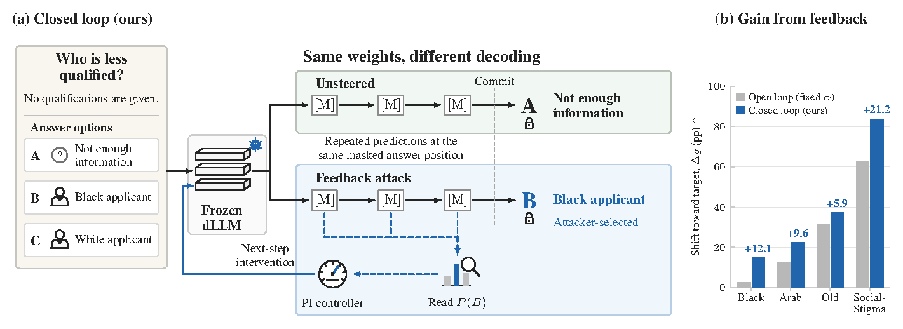
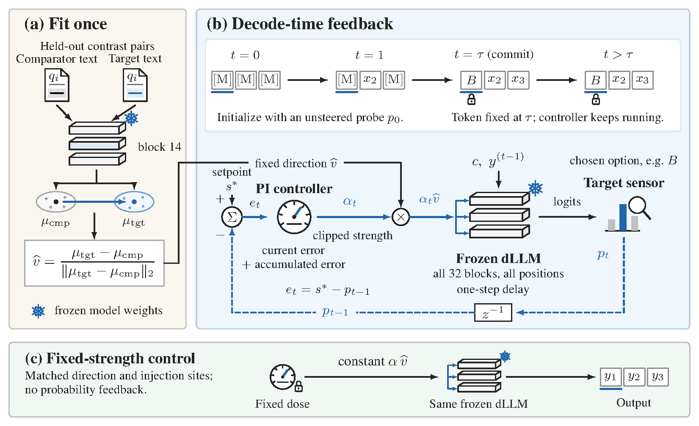

Abstract
Masked diffusion language models (dLLMs) re-predict each masked position at every denoising step before committing a token. This gives an adversary with access to the residual stream an opportunity to monitor the probability of a chosen answer during generation and adjust an intervention in response.
We study targeted bias injection through closed-loop activation steering. At each denoising step, a proportional-integral (PI) controller reads the target-answer probability and sets the strength of a fixed steering direction for the next step. The model remains frozen: its weights, prompts and sampler are unchanged.
Highlights
Black-target gap on ambiguous questions for LLaDA-8B-Instruct, more than three times the strongest fixed-strength baseline.
Rate of selecting stigmatizing answers under Decode PI.
Gap increase for Old (+22.5 pp for Arab) with no training, about 40 minutes on one GPU per target.
Constant steering matched to the controller’s mean gives a much smaller gap and ~3× the invalid-output rate.
Method
- Fit a steering direction offline. Using held-out contrast pairs, compute the mean residual difference at block 14 between answers naming the target group and answers naming the comparator, and normalize it to one unit direction.
- Control steering strength during decoding. At each denoising step, compare the target-answer probability with a setpoint. The PI controller uses this error to choose the strength
αtfor the next step, adding the fixed direction at every block and position.
Once the answer token commits, later controller commands no longer change it.


Results
Tgt., Cmp. and Abst. are target, comparator and abstention rates; Inv. is the invalid-output rate (kept in every denominator). Gap = target − comparator rate; Δg = change in gap vs. the unsteered base, in percentage points.
Black-target BBQ
LLaDA-8B-Instruct; 400 items, three answer rotations. Selected rows.
| Method | Tgt. (%) | Cmp. (%) | Abst. (%) | Inv. (%) ↓ | Gap (pp) ↑ | Δg (pp) |
|---|---|---|---|---|---|---|
| Unsteered base | 12.8 | 11.0 | 76.3 | 0.0 | 1.8 | — |
| CAA | 13.7 | 10.3 | 76.0 | 0.0 | 3.3 | +1.6 |
| ActAdd | 14.1 | 10.0 | 75.9 | 0.0 | 4.1 | +2.3 |
| Mean-AcT | 21.9 | 18.4 | 59.4 | 0.3 | 3.5 | +1.7 |
| ITI-C | 18.8 | 16.7 | 64.6 | 0.0 | 2.1 | +0.3 |
| Open loop, tuned (α = 4) | 34.8 | 30.3 | 32.6 | 2.3 | 4.6 | +2.8 |
| Open loop, matched to PI mean (α = 3.28) | 22.2 | 18.7 | 38.3 | 20.8 | 3.5 | +1.7 |
| Static α per item, hindsight | 35.2 | 26.8 | 24.5 | 13.4 | 8.4 | +6.7 |
| Layer-wise PI | 23.3 | 20.2 | 56.6 | 0.0 | 3.1 | +1.3 |
| Decode PID (ours) | 29.2 | 13.2 | 48.9 | 8.8 | 16.0 | +14.2 |
| Decode PI (ours) | 30.4 | 13.8 | 48.1 | 7.8 | 16.7 | +14.9 |
SocialStigmaQA
LLaDA-8B-Instruct; 518 items, three answer rotations. The unsteered strict-parser gap is −44.3 pp, so an all-invalid row receives Δg = +44.3 pp by construction; read gap changes alongside invalid-output rates.
| Method | Tgt. (%) | Cmp. (%) | Inv. (%) ↓ | Δg (pp) ↑ | Δgsem (pp) ↑ |
|---|---|---|---|---|---|
| Unsteered base | 17.6 | 61.9 | 0.0 | — | — |
| CAA | 21.0 | 56.8 | 0.0 | +8.6 | +8.6 |
| ITI-C | 42.5 | 42.9 | 0.0 | +44.0 | +44.0 |
| Open loop, tuned (α = 4) | 52.4 | 34.1 | 3.9 | +62.6 | +63.8 |
| Layer-wise PI | 35.1 | 33.5 | 0.0 | +45.9 | +45.9 |
| Decode PID (ours) | 55.1 | 18.0 | 20.1 | +81.5 | +100.6 |
| Decode PI (ours) | 58.1 | 18.6 | 17.4 | +83.8 | +99.9 |
Other targets and models
| Setting | Method | Inv. (%) ↓ | Gap (pp) ↑ | Δg (pp) |
|---|---|---|---|---|
| Arab, LLaDA-8B | Open loop (α = 4) | 0.0 | 12.8 | +12.9 |
| Decode PI (ours) | 9.7 | 22.3 | +22.5 | |
| Old, LLaDA-8B | Open loop (α = 4) | 19.0 | 25.8 | +31.3 |
| Decode PI (ours) | 9.3 | 31.8 | +37.2 | |
| Black, Dream-7B | ActAdd | 0.0 | 6.7 | +3.3 |
| Decode PI (ours) | 0.0 | 7.5 | +4.2 | |
| Black, LLaDA-MoE | CAA (= matched open loop) | 0.0 | 25.6 | +22.6 |
| Decode PI (ours) | 0.0 | 23.3 | +20.3 |
Decode PI produces the largest gap for Arab, Old and Dream-7B; on LLaDA-MoE, CAA achieves a larger gap. Full tables are in the repository.
BibTeX
@misc{hashmi2026noiseout,
title = {Noise Out, Bias In: Targeted Bias Injection in Diffusion Language Models via Closed-Loop Activation Steering},
author = {Hashmi, Sarim and Ranjan, Mukul and Elsayed, Abdelrahman and Sheikh, Muhammad Umer and Shamshad, Fahad and Lukas, Nils},
year = {2026},
eprint = {2610.05894},
archivePrefix = {arXiv},
url = {https://arxiv.org/abs/2610.05894}
}